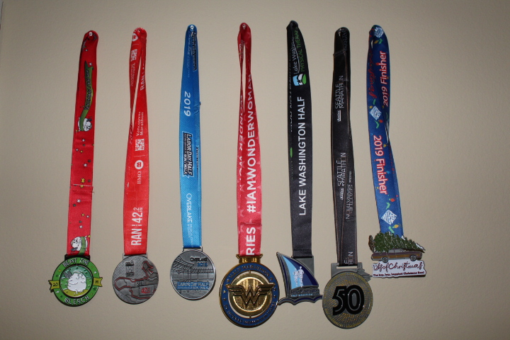

Every runner who is a also a writer writes their running story at some point. Its about time I wrote mine. I run at least 21 miles a week and have been consistently doing so for 4 years now. I don’t participate in every race there is, I’m far from a sub 2 hour half marathon, on many mornings its a struggle to get up and run. Despite all the struggles, I’m a consistent runner and sometimes a marathoner.
I’ve given these details because every time I mention I’m a runner, someone will ask these questions, trying to rate caliber of my runner-ship. I know, I’m not elite or fast runner, some would even say I’m not a real runner, they would probably be right. I’m not a runner because I’m best at it but because I love it enough to do it consistently. Why? here are my reasons.
Endorphins: Running has some obvious long-term benefits which draws many to get into it. As appealing as they are, it’s the short term rewards that keep me going; particulatly regular doses of the rare happy hormone. Life can be chaotic, with curve balls from left, right and center. Its takes a lot of star-alignment to feel happy, calm and relaxed. You can wait for stars to align or numb yourself or sustainably work for it. Like many other runners, I choose to work for it.
Health: Any form of exercise is good for physical health; calorie burning, stamina, cardiovascular fitness and all that good stuff. Running, above all that, has been proven to increase longevity. That settles it.
Sleep: It is a fact that exercise reduces anxiety and improves sleep performance. It is a personal fact I have a hard time sleeping if I stop running for even a few days. In the grand scheme of things temporary muscle pain is a small price to pay for good sleep.
Productivity: Just because I’m a morning runner doesn’t mean I’m a morning person naturally. Actually I’m not sure where my natural circadian rhythm puts me; I can go either way but I prefer early mornings thats start with a run. With a major battle conquered, comes momentum to tackle a lot more.
Discipline: Show me a marathon runner, I’ll show you a highly disciplined person. Some of us prefer a free form life where we do whatever we want whenever we want to. As valid and glamorous as it sounds, it is devoid of experiences that make us resilient, determined and dare I say interesting. Running a marathon means having a target bigger than yourself, it means pushing yourself to your absolute limits, extending the limits, physically and psychologically, it means training for months in advance, it means taking care of your body like it has a purpose. Running reminds my body who is in charge and that is powerful.
Races: I have mixed feelings races, on one hand they are tough, long, painful, competitive, pricey and one might say unnecessary. Fair, but if I didn’t run races I would never push myself beyond my usual 7 miles or have my infamous wall of medal or explore many beautiful trails. There is also the fun measurement of time in terms of days/weeks till the next race/the next mile, there is always something to look forward to.

Meditation: The world is noisy and for an sensitive overthinker like myself these signals are amplified, like going through life with everyone on loudspeaker, Can you imagine that? Overthinking is not bad in itself, hard problems are solved by overthinking, by exhaustively considering every possible scenario, but obsessing over every minor thing isn’t the most productive or healthy way to live. There has to be a filter, a step back to recalibrate and regroup, a meditative run with no distractions. There has to be a happy place, running is my happy place.
And that is the sum of reasons I can remember. This post is dedicated to everyone who thinks its crazy to run in the snow, or to run 26 miles, to run without headphones or to simply run on a regular basis. Whatever your reasons are, your sometimes-ridiculed madness is valid. Thanks for reading all the way to the end like the finisher you are. Happy running!